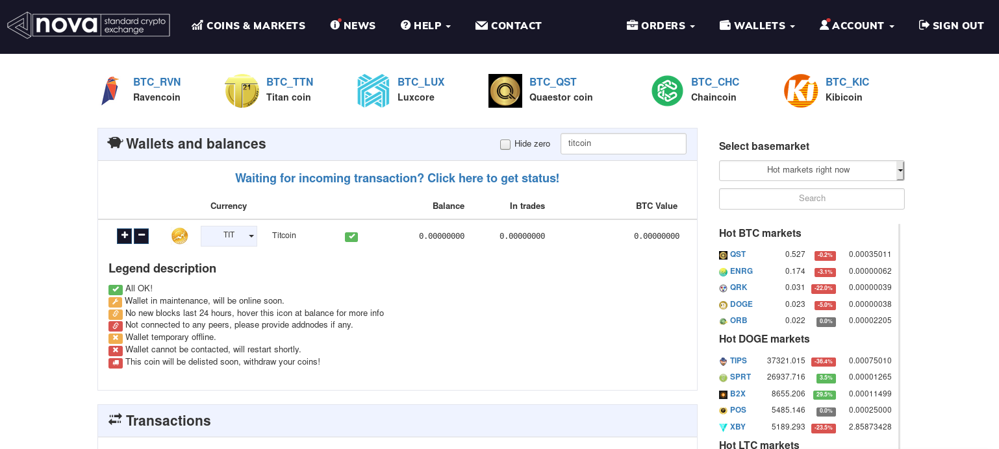

Using Titcoin

So, how do you get started? In order to receive titcoins, you need a Titcoin address. A Titcoin address looks like this: 1Q2oBNFG5GhceW4sFA5UB3KEry366heAv8 (it's basically just a bunch of random characters starting with "1"). You can publish your Titcoin address on the internet in order to receive titcoins. There are different ways of getting a Titcoin address, each have their pros and cons.
- Option #1 (recommended): Use the official Titcoin wallet
- Option #2: Use a deposit address on NovaExchange
- Option #3: Use a deposit address on Yobit
- Which one should I use?
Option #1 (recommended): Use the official Titcoin wallet

The Titcoin wallet is a program for the PC (Windows, Mac, Linux), which you can use to send, receive and store your titcoins. You can download it under Download and take a look at the screenshot tour under Screenshots.
Pros:
- You have full control over your titcoins.
- No registration is necessary, it can be used anonymously.
- It is open source and free of viruses. You can take a look at the source code on GitHub.
- You can have multiple Titcoin addresses and e.g. use a unique address for each post, to see for which post you got the most titcoins. Or use a unique address for each site, subreddit etc.
Cons:
- You need a PC.
- You need to synchronize the wallet on the first startup.
- If you want to sell your titcoins later, you will have to transfer them to a cryptocurrency exchange, first.
Option #2: Use a deposit address on NovaExchange
{kind=link}
NovaExchange is a cryptocurrency exchange, which is a platform for trading different cryptocurrencies. While exchanges are generally meant for trading coins and not for storing them, many people still like to use them as "online wallets".
Pros:
- You don't need a PC.
- You can directly trade Titcoin for Bitcoin on the same site.
- NovaExchange is a relatively trustworthy website. It is operated by a large Swedish company.
Cons:
- Less secure than storing your coins on your own PC
- You have no control over your titcoins.
- You can only have a single Titcoin address at a time.
- Verification is required in order to use NovaExchange.
Option #3: Use a deposit address on Yobit

Similarly to NovaExchange, Yobit is another cryptocurrency exchange, which is a platform for trading different cryptocurrencies. While exchanges are generally meant for trading coins and not for storing them, many people still like to use them as "online wallets".
Pros:
- You don't need a PC.
- You can directly trade Titcoin for Bitcoin on the same site.
- No verification is required.
Cons:
- Yobit is NOT a trustworthy website, it is infamously known for various scams and bad business practices. Yobit is operated by anonymous owners in Russia.
- Much less secure than storing your coins on your own PC
- You have no control over your titcoins.
- You can only have a single Titcoin address at a time.
Which one should I use?
If you have a PC or Mac, we would recommend you to use our official Titcoin wallet. We can provide you with full support if you need help or have any questions, simply visit our #support channel on Discord.
If you don't have a PC or Mac, we would recommend you to get verified on NovaExchange and use it to send and receive titcoins. Nova is currently the most secure option if you want to have an online Titcoin wallet.